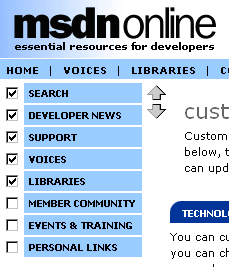
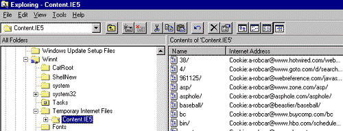

|
| ||
|
| ||
Robert Carter
MSDN Technical Writer
May 11, 1999
Note This article accompanies the article "Personalizing the Developer Start Page."
Contents
Cookies 101
Why Cookies Came to Be
Creating, Accessing, and Processing Cookies
The MSDN Start Cookie, Crumbled
Cookies are nuggets (sorry) of information stored on a user's hard drive when they visit a Web site (unless the user has turned off their browser's ability to store them). They circumvent the stateless nature of the HTTP protocol by allowing Web servers to store information on the user's hard disk in dedicated "cookie" files.
Way back when in the dark ages of the Internet, people trying to build meaningful relationships with visitors to their site were stymied by the statelessness of HTTP. (HTTP is the protocol by which browsers request pages and stuff from servers, and by which servers deliver the goods back to the browsers asking for them). Stateless means there is no information about you or the "state" of your computer (and by state we're not necessarily talking happy/sad or working/broken, but anything that would give the Web server some context in which to respond). So technically, even if you just requested twenty pages in a row from a particular Web server, using a strict interpretation of HTTP, if you were to request a twenty-first page the server still wouldn't know you from Adam.
HTTP, in other words, is a pipe. A pipe that carries information, instructions, and directions. It can carry information that allows the Web server to personalize, but doesn't do any personalization itself. Asking HTTP to personalize information is akin to asking the mailman not to deliver bills on Tuesdays. It ain't gonna happen because it's not in their job descriptions. (You can choose to not open bills on Tuesdays yourself, of course, but you can't stop them from being delivered.)
But of course Web servers know lots and lots about us, whether we want them to or not. We send information to Web servers through forms, query strings (the stuff you see appended to URLs, usually fronted by a "?"), and cookies. It's just that all that stuff is technically outside of HTTP's set of tasks; we use programs or technologies on the Web server to process information after it is passed along by HTTP.
The crucial difference between cookies and those other information-gathering techniques--and the reason they get many people in an uproar--is that the cookies themselves are stored on the user's computer. (With forms and query strings, the information being passed is created from the user's interactions within Web pages.)
Cookies get around the "statelessness" of the HTTP protocol by including additional information in the HTTP header, the packet of information your browser submits to a Web server to request a page. If you've been to a Web site before, and that Web site had deposited a cookie on your browser, the next time you visit that domain the cookie it sent you previously would be appended to your new page request. For all intents and purposes, cookies can only be read by the domain which originally created the cookie.
Cookies are usually used to identify unique visitors. They also store information that helps the Web server finish a transaction (especially for commerce), present additional information, authenticate users, whatever. It is very bad form to store any kind of personal data directly in a cookie;if you do, you should encrypt if first. Although it is extremely difficult for people to hack into cookies, it's not impossible, and people are suspicious enough of cookies without having horror stories to give them further pause.
You can create, access, update, and delete cookies from a user's cookie either on the client-side or the server-side using Microsoft® Visual Basic® Scripting Edition or JScript®, among other methods. We use both on the MSDN Start pages: Jscript on the client (via the document.cookie object) and VBScript on the server (via the ASP Request.cookies and Response.cookies collections).
You may recall from the first installment of our series that the MSDN Start page lets you select a bunch of information to include on your customized page:
If you're using Internet Explorer 4.0 and above (on the UNIX and Windows® platforms), you can select the order in which the categories appear. All data necessary to distill and serve this information is encoded in a single cookie. Each of the bullet items we discuss above are reflected in the cookies we generate and store on a visitor's computer.
Let's start with the sections a visitor wants to display. If I select and order my categories from the Customization page as shown in the graphic below, I generate a cookie (or, more appropriately, part of a cookie). And because I used Internet Explorer 5.0, I order my favored categories using the customization arrows.

Figure 1. Using the Category Selection tool with Internet Explorer 4.0 and above
I generate another chunk of cookie whenever I select any form element on the page. Each cookie chunk is a key-value pair. Remember the discussion in the last article about the Dictionary object key-value pairs? Well, you can store multiple key-value pairs in cookies and access them using the cookie Dictionary object.
Below is a cookie the MSDN Start page generated for Internet Explorer based on my customization settings. The key comes first, followed by the value (or attribute-value pairs), the domain the cookie is tied to, the cookie version, and then some gobbledy-gook that mostly refers to when the cookie expires on the client (we set our cookies to expire 1000 days from the date they were created). An "*" separates cookie keys from each other. Here's the unedited version of a section of an Internet Explorer cookie:
M=N=f&ST=SWA&D=f&P=WEB
msdn.microsoft.com/
0
2200563328
29325482
726622128
29252057
*
And here's the rest of the MSDN Start cookie edited to include only the stuff we use in our cookie processing:
S=t
I=IA,CR,BV,CC,5D,RB,WA ' and so on for over 200 interests available
P=MC=GB,GE
C=SE,NE,SU,MA,LI
So, there are five attributes in the above cookie: M (for Miscellaneous), S (for Synch, although we won't be talking about that much), I (for Interests), P (for Providers, where we store Member Community Special Interest Group information), and C (for Categories).
Navigator stores cookies in a slightly different fashion, though it captures the same material from the server. Instead of storing each cookie in its own file, as Internet Explorer does (see for yourself, as your cookies are typically stored in a directory named "Temporary Internet Files" in your Windows system folder),

Figure 2. Finding where Internet Explorer stashes your cookies
Navigator stores every cookie inside a single file called cookies.txt. (If you're using Nav3, cookies.txt is typically in the C:\Program Files\Netscape\Nav3 directory; Nav4 stores its cookies according to the registered computer user file, in my case C:\Program Files\Netscape\Users\a_robcar.)
The order followed within a Netscape cookie itself is the domain for which the cookie is valid, a true/false flag indicating if all pages within a given domain can access the cookie, the path for which the cookie is valid (the "/" indicates that the cookie is valid for the root directory of the domain), another flag to indicate whether all pages within the path can access the cookie, the cookie's expiration date (the number of seconds from Jan 1, 1970 00:00:00 GMT), the key, and finally the value (or set of attribute-value pairs). Thus, on a Netscape browser the MSDN Start cookie looks like the snippet below:
msdn.microsoft.com FALSE / FALSE 1080337504 S t
msdn.microsoft.com FALSE / FALSE 952571974 I IA,CR,BV,CC,...
msdn.microsoft.com FALSE / FALSE 952571974 C NE,MA,LI,SE,SU
msdn.microsoft.com FALSE / FALSE 952571974 M ST=SWA&D=f&P=WEB
msdn.microsoft.com FALSE / FALSE 952571974 P MC=GB,GE
Note that the only real difference, cookie-content-wise, between the Netscape and Internet Explorer versions is the order of the entries in the Categories cookie. The Internet Explorer cookie orders the entries according to the order I specified in the graphic above, whereas the Netscape cookie is stuck with the default order (it's a DHTML thing).
Having said all that, how your browser retains cookies isn't what's really important. What's important is the format the cookie data takes when it's sent via HTTP.
Cookies are often sent with each cookie chunk separated by a semi-colon (";"); the attribute name starts the cookie entry, followed by an equals sign ("=") and the attribute value. Thus, the MSDN Start page cookie would get transmitted in a string as follows:
C=NE,MA,LI,SE,SE,SU;M=N=f&ST=SWA&D=f&P=WEB;SYNCH=t;I=IA,CR,BV,CC,5D,
RB,WA,WF,WT,AX, 'and so on until ;
Processing the cookie becomes a matter of processing the string, which we talk about in the article that originally brought you here.
That's hardly all there is to cookies (this sub-article is called "Cookies 101", after all). You can learn even more about cookies at Cookie Central  . One article I particularly like is "The Cookie Controversy," by Lori Eichelberger , which discusses why cookies have raised privacy and security concerns.
. One article I particularly like is "The Cookie Controversy," by Lori Eichelberger , which discusses why cookies have raised privacy and security concerns.
Otherwise, you now know more than enough to digest (sorry) the rest of "Personalizing the Developer Start Page."
Robert Carter is an MSDN technical writer.
Did you find this material useful? Gripes? Compliments? Suggestions for other articles? Write us!
© 1999 Microsoft Corporation. All rights reserved. Terms of use.